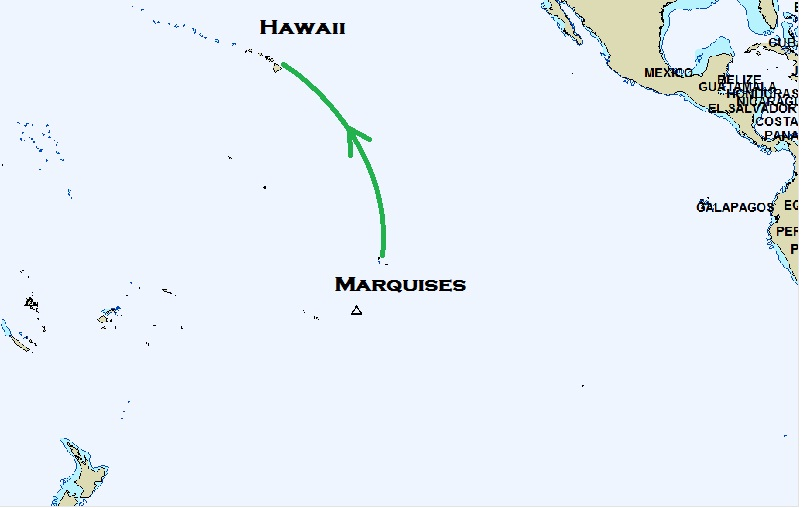
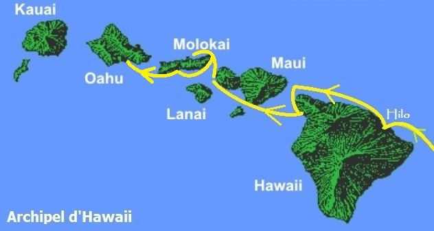

|
Marquises-Hawaii. 2080 nm et le (re)passage de l'équateur après près de 4 ans dans l'hémisphère Sud. |
 |
|
Hilo. Arrivée à Hilo, sur Big Island, l'île des volcans en éruption. Ca va chauffer !!!. Voir notre avis |
 |
| Date | Lieu | Log (nm) |
| 19/02/2013 au 04/03/2013 | Nuku Hiva - Hilo | 19640 |
| 04/03/2013 au 28/04/2013 | Hilo - Big Island | 19660 |
| 29/04/2013 au 05/05/2013 | Lahaina - Maui | 19800 |
| 05/05/2013 au 07/05/2013 | Honokahua - Maui | 19810 |
| 07/05/2013 au 18/05/2013 | Puko'o - Molokai | 19850 |
| 18/05/2013 au 19/05/2013 | Ilio Point - Molokai | 19885 |
| 19/05/2013 au 11/06/2013 | Honolulu - Oahu | 19925 |